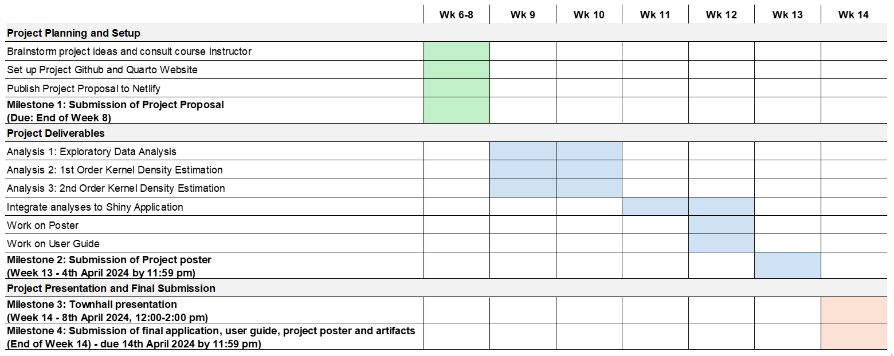

Project Proposal
1. Abstract
This project involves conducting Spatial Point Patterns Analysis on road accidents in Thailand. We will be analysing the Thailand road accident data. In this project, a hotspot is defined to be a location/part of the road network that has more road accidents happening.
The goal of this project is to create a web application that aims to aid users in performing exploratory data analysis, kernel density estimation, first-order spatial point pattern analysis, second-order spatial point pattern analysis, spatiotemporal area analysis and network-constrained spatial points pattern analysis.
The user, assuming to have little or no coding experience, will be able to carry out the above stated analysis without the need for coding and in-depth knowledge about the dataset. This allows usage of geospatial data for relevant studies or other purposes.
2. Problem & Motivation
According to the 2018 Global Status Report on Road Safety by the World Health Organization (WHO), Thailand’s road traffic death rate was estimated at 32.7 deaths per 100,000 population. However, the serial report in 2023 indicated a reduction in the death rate related to road traffic to 23.7 deaths per 100,000 population. Despite this improvement, Thailand’s road traffic death rate remains significantly higher than that of Singapore. This great contrast in road safety between Thailand and Singapore has motivated our team to conduct a geospatial analysis on road accidents in Thailand.
Though by using the Internet, anyone would be able to download, manipulate and analyse the same dataset to obtain valuable insights and patterns that cannot be detected through human eyes. Yet this method is not as suitable for individuals with little to no coding experience.
3. Project Objectives
The team would be creating an application using shiny that allows the user to do the following:
Exploratory data analysis to gain rough idea of the context of data
1st Order Kernel Density Estimation
Network-constrained Kernel Density Estimation (NKDE)
Temporal Network Kernel Density Estimation (TNKDE)
2nd Order Kernel Density Estimation
Use appropriate functions from F, G, K, and L for spatial cluster analysis
Conduct a complete spatial randomness test, then a Monte Carlo test, to investigate correlation between spatial factor and road accident occurrence
4. Relevant Work
4.1. Signal (Ang et al., n.d.)
This project was done by our seniors with the aim to discover the network-constrained spatio-temporal patterns of traffic accidents Leeds, United Kingdom. The following four main analyses were explored in their project:
Network Constrained Kernel Density Estimation (KDE)
- To visualise and identify the road segments with higher intensity of traffic accidents
Network Constrained K- Function
- To determine if there is spatial correlation between accident points (i.e. dispersed, clustered or randomly distributed)
Network Constrained Cross K-Function:
- To determine if there is spatial correlation between accident points and variables selected using multi-type K-function
Network Constrained Cross Pair Correlation Function
- To determine if there is spatial correlation between accident points and variables selected using pair correlation function
4.2. Detecting traffic accident clusters with network kernel density estimation and local spatial statistics: an integrated approach (Xie & Yan, 2013)
This study highlights the limitations in analysing traffic accidents through conventional Kernel Density Estimation (KDE) within a two-dimensional space as accidents are often constrained to network spaces. As such, the authors proposed the use of Network Constrained KDE (NetKDE) as a more suitable approach. However, both approaches lack formal spatial statistical methods in determining the statistical significance of accident hotspots. In order to address these limitations, the authors proposed to integrate network KDE with local Moran’s I for hotspot detection so as to leverage the strengths of each approach.
5. Data Source
In this project, we will be using the following datasets:
| Data | Type | Format |
|---|---|---|
| Thailand Road Accident [2019-2022] | Aspatial | .csv |
| Thailand Subnational Administrative Boundaries | Geospatial | .shp |
| Geofabrik’s OpenStreetMap road data for Thailand | Geospatial | .shp |
5.1. Thailand Road Accident [2019-2022]
The Thailand Road Accident dataset, available in csv format, provides comprehensive records of traffic road accidents in Thailand, spanning from 2019 to 2022. It encompasses a wide range of information, including the dates, times, locations, weather conditions and road types. The data source is available here.
5.2. Thailand - Subnational Administrative Boundaries
The Thailand Subnational Administrative Boundaries dataset is available in ESRI shapefile format. It comprises the administrative boundaries at various levels within Thailand, including levels 0 (country), 1 (province), 2 (district), and 3 (sub-district or tambon). We will use this dataset to extract the boundary of Thailand. The data source is available here.
5.3. OpenStreetMap road data for Thailand
The Geofabrik’s OpenStreetMap road data can be sourced from Geofabrik Download Server and is available in ESRI shape file format. It contains various layers such as roads, buildings and points of interest. We will be using this dataset to map out the road networks in Thailand. The data source is available here.
6. Methodology
6.1. Data Preparation
We will be performing data wrangling on the 3 datasets mentioned above so that we can perform our analyses, with the steps that we will take as follow:
6.1.1. Thailand Administrative Boundary Data
Extracting boundary of the whole of Thailand
Extracting geographical boundaries of all the provinces
6.1.2. Thailand Road Accidents Dataset
Simplifying variables like cause of accidents and vehicle types into bigger subsets of categories.
Simplifying variables like number of fatalities and weather conditions into a boolean value (True/False, Yes/No).
Extracting key information like hour, month, or specific day of the week from the datetime variable of the accident into separate variables for temporal-related analysis.
Removing unnecessary data points that lie outside of Thailand by filtering it with the Thailand boundary data from above.
Dropping irrelevant fields like reporting datetime, agency, route name, and fields that are in Thai.
6.1.3. OSM Thailand Roads Dataset
6.2. Exploratory Data Analysis
In this section, we will be performing the following EDA:
Finding out the basic distribution of traffic accidents, categorised by the different factors.
Logistic Regression to find out the significance of each variable in determining whether an accident causes fatality.
Discover region specific info, like which reason has the highest accident rate, fatality rate etc.
6.3. Overview of Main Analyses
The main focus of our project would be on Spatial Point and Network-Constrained Spatial Point Analysis. Here are the analyses and techniques that we will be employing:
6.3.1. Exploratory Data Analysis
We aim to uncover insights into the severity and outcome of accidents, exploring whether certain areas or times exhibit a higher likelihood of fatal incidents. This in-depth analysis will not only enhance our understanding of the overall road safety landscape but will also provide crucial information for developing targeted strategies to mitigate the severity of accidents, ultimately contributing to a comprehensive approach to improving traffic safety in Thailand.
6.3.2. 1st Order Kernel Density Estimation
In this segment, we will use 1st Order Kernel Density Estimation methods to further refine our understanding of traffic accidents in Thailand. These statistical techniques go beyond identifying hotspots by providing a nuanced analysis of the intensity and spatial distribution of accidents. The 1st Order Kernel Density Estimation will offer a smoothed representation of the overall accident density.
By employing spatial point analysis on the traffic accidents in Thailand, we can explore the geographical distribution of accident hotspots and identify areas with higher risk.
Network-constrained Kernel Density Estimation (NKDE)
We will also explore the network-constrained spatial point analysis to gather insights into how the city’s road network contributes to accident occurrences, allowing for targeted interventions in critical areas.
Temporal Network Kernel Density Estimation (TNKDE)
In addition to that, we will explore whether festive periods contribute to the occurrence of traffic accidents. By examining temporal patterns and correlating them with festive events, we seek to provide a comprehensive understanding of the factors influencing road safety during celebratory periods.
6.3.3. 2nd Order Kernel Density Estimation
In this segment, we will use 2nd Order Kernel Density Estimation methods instead to further refine our understanding of traffic accidents in Thailand. The 2nd Order Kernel Density Estimation will allow us to capture variations and fine-tune our identification of high-risk zones.
G/F/K/L Function
Complete spatial randomness test
6.3.4. Interactive dashboards using Shiny
As we hope that the findings from this study can ultimately enhance road safety in Thailand, we will be creating interactive dashboards to empower urban planners, policymakers, and traffic authorities to explore comprehensive analyses, including accident hotspots, temporal patterns, network influences, and key metrics, facilitating informed decision-making in doing so.
7. Storyboard
8. Timeline

9. References
Ang, J. Y., Chong, S., & Tan, Y. L. (2019, April 15). Signal Research Paper. SMU Wikipedia. https://wiki.smu.edu.sg/1819t2is415/Signal_Research_Paper
Safety and Mobility (SAM) & Social Determinants of Health (SDH). (2023, December 13). Global status report on road safety 2023. World Health Organization. https://www.who.int/publications/i/item/9789240086517
Social Determinants of Health (SDH). (2018, June 17). Global status report on road safety 2018. World Health Organization. https://www.who.int/publications/i/item/9789241565684
Xie, Z., & Yan, J. J. (2013). Detecting traffic accident clusters with network kernel density estimation and local spatial statistics: an integrated approach. Journal of Transport Geography, 31, 64–71. https://doi.org/10.1016/j.jtrangeo.2013.05.009